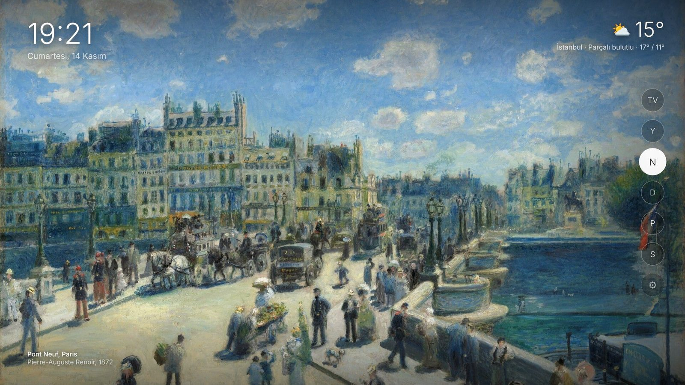
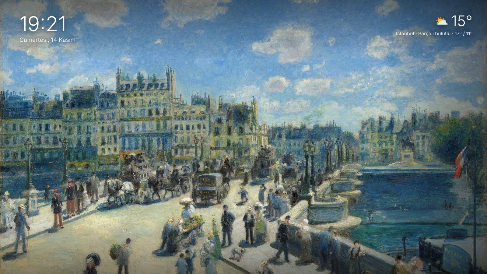
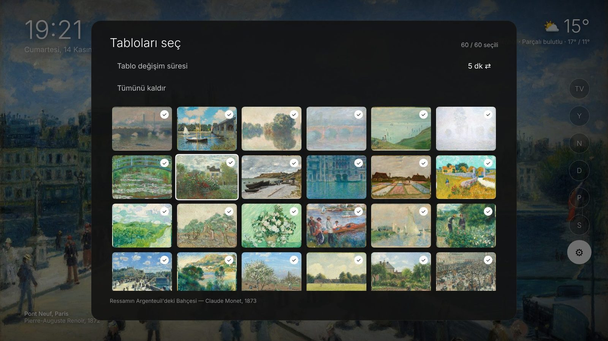
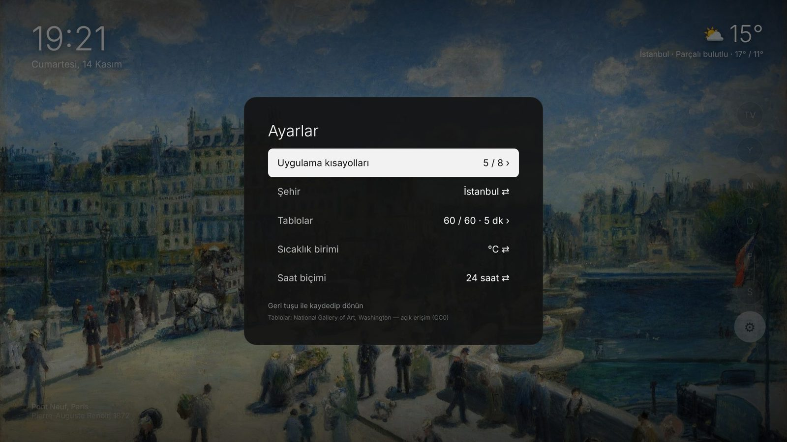

TV'niz, sessizce asılmış başyapıtlarla.
Minimal Art, akıllı TV'nizi sakin ve reklamsız bir galeriye dönüştürür: Monet, Van Gogh, Renoir ve Turner'ın tabloları tam ekranda, sade bir saat, günün hava durumu ve ince bir uygulama kısayolu sütunu.

Neler yapar
60 başyapıt içinde
Ulusal Sanat Galerisi'nin açık erişim koleksiyonundan, telif süresi dolmuş tablolar; uygulamanın içinde gelir.
Sizin galeriniz, sizin hızınız
Sevdiğiniz tabloları seçin; her dakika, her saat ya da arada istediğiniz sürede değişsin.
Saat ve hava durumu
12 veya 24 saat biçimi, 18 şehir için °C ya da °F hava tahmini.
Uygulama kısayolları
8'e kadar favori uygulama ve canlı TV, kumandada tek tuş uzağınızda.
Galeri modu
Kumandaya dokunmayınca menü kaybolur, ekranda yalnızca tablo kalır.
Reklam yok, takip yok
Hesap yok, analiz yok, veri toplanmaz. Gizlilik politikasını okuyun.
TV'nizde



Paketler
3 tablo, saat, hava durumu ve kısayollar.
60 tablonun tamamı. Tek seferlik ödeme.
60 tablo ve her ay 10 yeni tablo. Ya da yıllık 24,99 $.